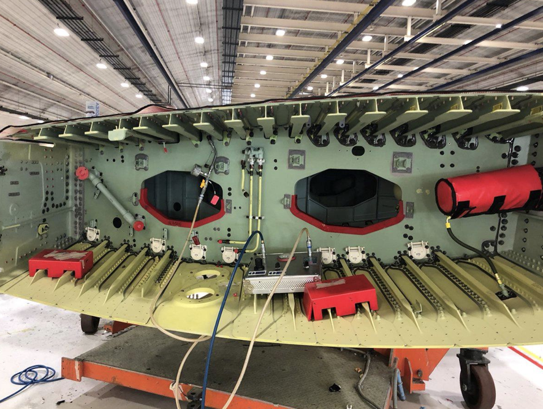
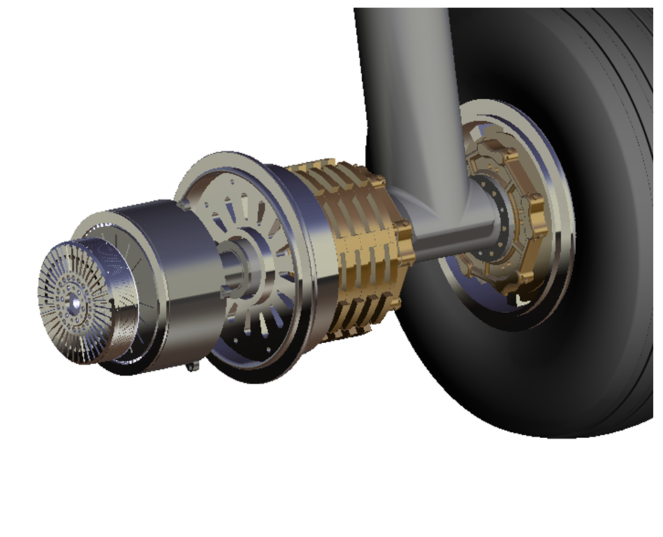
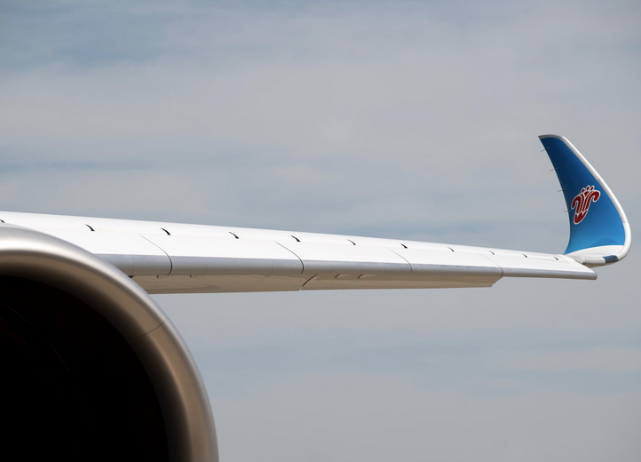

Operations Assistant
Cliftonvalley Apartments, Bristol
- Coordinating planning, operations, and Excel-based tracking.
Aerospace Engineer | Bristol, UK
MSc Aerospace Vehicle Design graduate from Cranfield University, with Airbus-supported project experience in fuel systems, electric taxiing integration, and A320 wing structural analysis.

Selected work
Focused case studies across systems architecture, integration, structural modelling, and certification-aware decisions.

Airbus | SystemsDesigned fuel storage, venting, inerting, and water management logic aligned with CS-25 expectations.
View project
Airbus | IntegrationIntegrated electric propulsion into landing gear with motor sizing, gearbox design, and safety analysis.
View project
Independent | StructuresModelled bending moment, stress distribution, and factor of safety using MATLAB workflows.
View projectStudied electric pump engine principles, test stand assembly, storage tanks, tubing, controls, and data acquisition for small-scale rocket engine testing.
View reportDesigned and analysed a solar thermal propulsion concept for small satellites, converting absorbed solar energy into propellant heating and nozzle exit kinetic energy.
View reportBackground
Cliftonvalley Apartments, Bristol
Independent project
Boots UK, Bristol
Cranfield University, UK
Om Space, India
SRM University, India
Expertise
Load modelling, stress evaluation, FEA thinking, and structural efficiency analysis.
Aircraft system architecture, integration trade studies, and certification-led decisions.
Numerical methods, CFD awareness, and repeatable analysis workflows for design iteration.
3D modelling, assemblies, and packaging work for aerospace components and interfaces.
Contact
Based in Bristol, UK and open to roles in aircraft systems, structures, and design analysis.